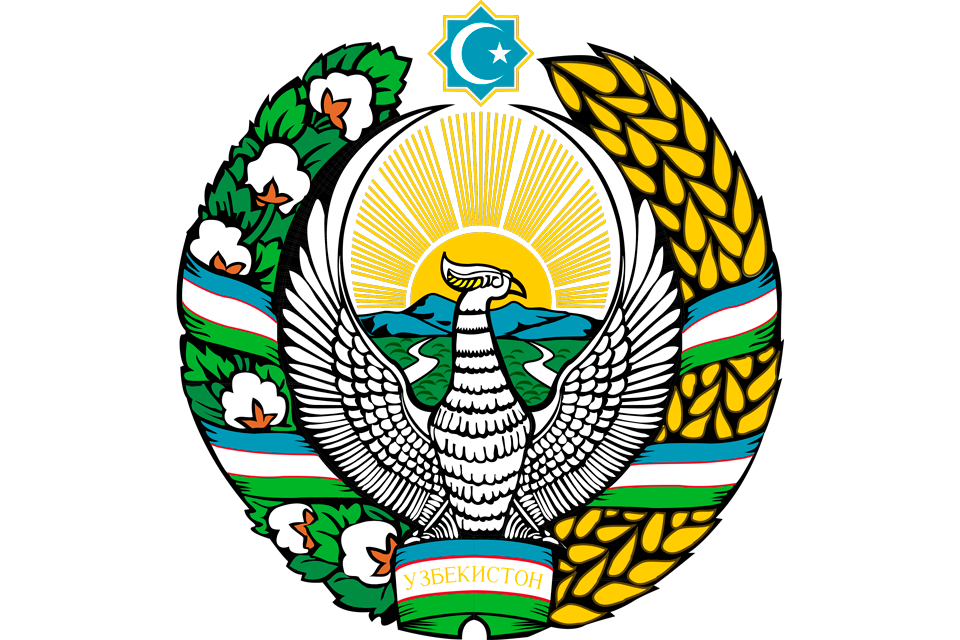

⚡
ЎзММА Ижро Назорати Тизими • 18.11.2026
Ижро Интизоми — Натижадорлик Мезони
Ўзбекистон Республикаси Президенти, Президент Администрацияси раҳбари, Вазирлар Маҳкамаси ҳамда Ассоциациянинг ички ҳужжатларидаги топшириқларнинг ўз вақтида ва сифатли бажарилишининг кунлик мониторинги.
Жами топшириқлар
57 та
Қарздорлик (Муддати ўтган)
43 та
Назоратда (Муддати бор)
14 та

Раҳбар минбари
«Ҳар бир топшириқ ижроси қатъий назоратда бўлиши шарт»
ЎзММА Бошқаруви Мурожаати
«Ҳар бир банд бўйича белгиланган муддатлар давлат аҳамиятига молик. Ижро муддати ўтган 43 та топшириқ бўйича барча масъул бўлим бошлиқлари кунлик аниқ натижа ва ҳисобот киритиши талаб этилади.»
Ҳолат: 18.11.2026 йил
edo.ijro.uz назорати